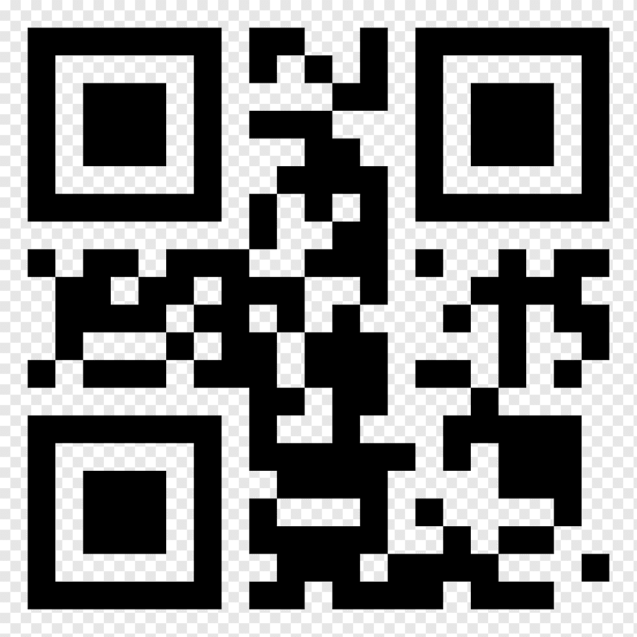

<ion-header [translucent]="true">
  <ion-toolbar>
    <ion-title>qr_a</ion-title>
  </ion-toolbar>
</ion-header>

<ion-content class="qr-container">
  <div class="qr-content">
    <h2>Escanear QR</h2>
    <div class="qr-code">
      
    </div>
    <ion-button style="color: whitesmoke;" expand="full">Escanear</ion-button>
  </div>
</ion-content>